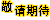

		<div ng-controller="jiaoshiCtrl" class="yrkbox">
				<div class="yrkbox_top">
					<div class="yrkbox_nav">
						<div class="yrkbox_nav_left">
							<p class="p1">欢迎<a href="#" id="Controller"></a>登录，最新版本</p>
							
						</div>
						<div class="yrkbox_nav_right">
								<!--<div class="upload">
									<input type="file" id="file"/>
									<div class="box">
										<div class="image"></div>
									</div>
								</div>-->
								<div class="yrkbox_nav_right_b">
									<span style="width: 150px;">管理者：<a href="#" id="Controllerr"></a></span>
									<span style="border-left: 1px solid #ccc;float: right;"><a ui-sref="login">退出登录</a></span>
								</div>
						</div>
					</div>
				</div>
				
				<div class="yrkbox_bottom">
					<div class="yrkbox_bottom_left">
						<div class="yrkbox_bottom_left_g">
							<p>班级</p>
							
						</div>
						<ul class="yrk_lower">
							<li class="yrkmain">
								<ul id="yrkUl">
									<li>1508A</li>
									<li>1508B</li>
									<li>1509A</li>
									<li>1509B</li>
									<li>1510A</li>
									<li>1510B</li>
									<li>1604A</li>
									<li>1604B</li>
								</ul>
							</li>
						</ul>
					</div>
					<div class="yrkbox_bottom_right">
						<div class="yrkbox_bottom_right_t">
							<p>学生信息</p>
						</div>
						<div class="yrkbox_bottom_right_c">
							<input type="text" id="content" placeholder="请输入要搜索的内容" />
							<button class="ss">搜索<tton>
							<button class="add" ui-sref="add()">添加信息<tton>
						</div>
						<div class="yrkbox_bottom_right_f">
							<table border="1" cellspacing="1" cellpadding="1">
								<tr>
									<th>姓名 </th>
									<th>班级</th>
									<th>性别</th>
									<th>手机号</th>
									<th style="width: 230px;">编辑</th>
								</tr>
								<tr class="tr" ng-repeat = 'item in ary'>
									<td>{{item.name}}</td>
									<td>{{item.classnames}}</td>
									<td>{{item.sex}}</td>
									<td>{{item.cellphone}}</td>
									<td>
										<button ui-sref="xiugai({id:item.Uid})">修改</button>
										<button ui-sref="xiang({id:item.Uid})">详情</button>
										<button class="delBtn" id='{{item.Uid}}'>删除</button>
									</td>
								</tr>
							</table>
						</div>
						<div class="yrkbox_bottom_right_g clearfix">
							<!--<div class="yrkbox_bottom_right_g_left fl">
								<p>当前页数：<span>{{totalPage}}</span></p>
							</div>-->
							<div class="yrkbox_bottom_right_g_right fr">
								<p class="fl shang" ng-click="shang()">上一页</p>
								<p class="fl next" ng-click='next'>下一页</p>
								<p class="fl">共：<span>{{length}}</span>条</p>
							</div>
						</div>
					</div>
				</div>
		</div>
		